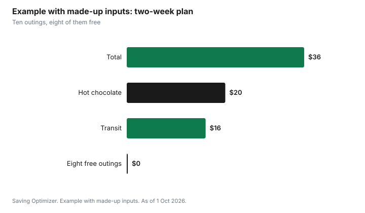

Entertainment · Canada
Free Holiday Entertainment in Canada: Parades, Skating, Libraries and Civic Events
The best free holiday entertainment in most Canadian cities comes from four places: civic celebrations such as tree lightings and parades, free public skating at city rinks, library programs and museum passes, and free admission offers at national parks and historic sites. In Toronto, for example, the Original Santa Claus Parade runs on Sunday 22 November 2026 and is free to watch on the route, the City's drop-in skating programs at indoor arenas and outdoor artificial rinks are free with no reservation, and Toronto Public Library cardholders can book free museum and attraction passes. Parks Canada admission is free for youth 17 and under all year. Put the free events on a calendar the way you would paid ones, and book anything that needs a reservation the day it opens.
Key takeaways
- Toronto's Santa Claus Parade is Sunday 22 November 2026 and is free on the route (also broadcast on Citytv).
- Toronto drop-in skating at arenas and outdoor artificial rinks is free with no reservation; outdoor rinks typically open in late November.
- Toronto Public Library tpl:map passes give free admission with an adult library card; most are released on the first Wednesday of the month at 2 pm.
- Parks Canada admission is free for youth 17 and under. The Canada Strong Pass free-admission period ended 7 September 2026.
- Check your own city's events page: most cities run a tree lighting, a winter festival or New Year's Eve celebration at no charge.
- Example with made-up inputs: a family fills two weeks of the break for $36.
Civic events
Most Canadian cities and towns hold free outdoor events in November and December: a tree lighting at city hall, a winter festival, fireworks on New Year's Eve or a holiday market with free entry. Toronto's Cavalcade of Lights has opened the season at Nathan Phillips Square since 1967, according to the City; check the City's page for this year's date. Smaller municipalities often post their events on a community calendar in October, so look early.
| Source | What you will find | When to look |
|---|---|---|
| City or town events page | Tree lightings, winter festivals, New Year's Eve | October and November |
| Business improvement areas | Window walks, light displays, carolling | November |
| Community centres | Holiday crafts, family skates | When the winter program guide comes out |
| Places of worship and community groups | Concerts, festivals of light, open houses | November and December |
| Local news and community newsletters | Parades and small-town events | November |
For light displays and markets, some of which are free, see Christmas light shows and Christmas markets with free admission days.
Parades
Santa Claus parades are free to watch in most places. Toronto's Original Santa Claus Parade marks its 122nd year on Sunday 22 November 2026, according to the parade's website, which also says it can be watched live on Citytv and Citytv+ or on the route. Many smaller cities hold their own parades in late November and early December, sometimes in the evening with lit floats.
- Arrive early for a spot near the start of the route, which usually clears first.
- Bring a thermos, snacks and something to sit on instead of buying food along the route.
- Take transit if you can; parking near a parade route is often limited or closed.
- Dress for standing still in the cold for an hour or more.
- If you would rather stay home, watch the broadcast and save the trip.
Library
Public libraries are the most underused source of free holiday entertainment. Most run free holiday programs for children and adults, lend movies, games and e-books, and some lend museum and attraction passes. Toronto Public Library's tpl:map program lets adult cardholders book free passes to arts and cultural attractions. The library says most passes are released on the first Wednesday of every month at 2 pm, some are released weekly, and all are subject to availability. Each pass lists who it covers, for example two adults including the cardholder, sometimes with children.
| Item | What TPL says |
|---|---|
| Who can book | Adult library cardholders |
| Cost | Free |
| Release | Most passes on the first Wednesday of every month at 2 pm; some weekly |
| How | Log in to the tpl:map site, choose an attraction and date, print or download the pass |
| Coverage | Varies by pass, for example up to 2 adults including the cardholder |
| Availability | Subject to availability |
Other library systems have their own pass programs; ask at your branch. The guide to free and cheap family outings covers library passes in more detail, and library streaming covers free movies at home.
Skating
Outdoor skating is the classic free winter outing. In Toronto, the City says all drop-in programs at indoor arenas and outdoor artificial ice rinks are free, open to all, and need no reservation. Outdoor artificial rinks typically open in late November and close in March, and the City operates more than 50 outdoor rink locations in a typical season. Rinks close after heavy snowfall for cleanup, so check the City's rink status page before you go. Most programs require a helmet, and skate rentals are available at Nathan Phillips Square during the winter season.
| Item | City of Toronto |
|---|---|
| Cost | Free for all drop-in programs at arenas and outdoor artificial rinks |
| Reservation | Not needed |
| Outdoor season | Typically late November to March |
| Locations | More than 50 outdoor rink locations in a typical season |
| After snowfall | Rinks close for cleanup; check rink status |
| Helmets | Required for most programs |
| Rentals | At Nathan Phillips Square in winter |
Outside Toronto, most cities run free or low-cost public skates at outdoor rinks and community arenas; check your parks and recreation page. If you need skates for a growing child, a used pair or a skate swap costs far less than new.
National parks and historic sites
Parks Canada offers free admission to youth aged 17 and under all year. The Canada Strong Pass, which gave free admission to places operated by Parks Canada during set periods, ended on 7 September 2026, and regular fees applied from 8 September; Parks Canada's page does not list a free period for winter 2026 to 2027 as of 1 October 2026. Many urban national historic sites are open in winter and make a good outing for a family with teenagers who get in free.
Plan
Free events still need planning. Holiday weeks fill up quickly, and the free things that need bookings, such as library passes, go fast.
- In October, list the free events in your city with their dates.
- Put pass release days in your calendar, such as the first Wednesday of the month for tpl:map.
- Plan one free event per day of the school break, mixed with quiet days.
- Pack food and drinks for each outing.
- Check weather and rink status the morning of an outdoor plan.
- Keep one small paid treat in the budget, such as hot chocolate after skating.
Example with made-up inputs: two weeks of the school break
These numbers are an example with made-up inputs. They are not real prices. A family of four plans ten outings over the winter break. Eight are free: a parade broadcast, two outdoor skates, a library program, a tpl:map museum visit, a neighbourhood light walk, a city New Year's Eve event and a day at a national historic site where the two children get in free. They spend $20 on hot chocolate after the skates and $16 on transit. The two-week total is $36.
| Outing | Cost |
|---|---|
| Parade on TV | $0 |
| Outdoor skate, twice | $0 |
| Hot chocolate after skating | $20 |
| Library holiday program | $0 |
| Museum visit with a library pass | $0 |
| Light walk | $0 |
| City New Year's Eve event | $0 |
| Transit for the museum and New Year's Eve | $16 |
| Total | $36 |

For bigger outings with tickets, see Nutcracker and holiday concerts and New Year's Eve out versus in.
Sources
- The Original Santa Claus Parade, thesantaclausparade.com, as of 1 Oct 2026. Sunday 22 November 2026; 122 years; Citytv and Citytv+ broadcast.
- City of Toronto, Drop-in Skating, toronto.ca, as of 1 Oct 2026. Free drop-in programs; no reservations; outdoor rinks typically late November to March; more than 50 outdoor locations; closures after snowfall; helmets; rentals at Nathan Phillips Square.
- City of Toronto, Cavalcade of Lights, toronto.ca (modified 8 Jan 2026), as of 1 Oct 2026. Held since 1967.
- Toronto Public Library, tpl:map Passes, tpl.ca, as of 1 Oct 2026. Free passes with an adult card; most released first Wednesday of the month at 2 pm; subject to availability.
- Parks Canada, Admission and passes, parks.canada.ca, as of 1 Oct 2026. Free admission for youth 17 and under; Canada Strong Pass ended 7 Sep 2026.
- The family, outings and amounts in the example are an example with made-up inputs.
Frequently asked questions
When is the Toronto Santa Claus Parade in 2026?
The Original Santa Claus Parade's website lists Sunday 22 November 2026. It is free to watch on the route and is broadcast on Citytv and Citytv+.
Is skating free at Toronto city rinks?
Yes. The City of Toronto says all drop-in programs at indoor arenas and outdoor artificial ice rinks are free and need no reservation. Outdoor rinks typically open in late November, and most programs require a helmet.
How do I get a free museum pass from Toronto Public Library?
Adult cardholders can book tpl:map passes on the library's reservation site. Most passes are released on the first Wednesday of every month at 2 pm, and all are subject to availability.
Is Parks Canada free in winter 2026?
Admission is free for youth 17 and under all year. The Canada Strong Pass ended on 7 September 2026, and Parks Canada's page lists no free winter period for 2026 to 2027 as of 1 October 2026.
How do I find free holiday events in my city?
Check your city or town events page, business improvement areas, community centres, libraries and local news in October and November.
Researched and drafted with AI assistance and fact-checked against official Canadian sources. How we create content.
Disclosure: Saving Optimizer may earn a commission if a partner link is added later, such as a ticket or cash-back offer type. No partnership is claimed on this page, and no event or venue is ranked. Education only. Event dates can change; check the organizer before you go.